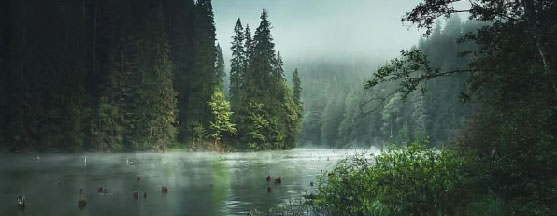
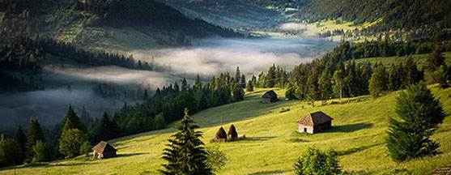
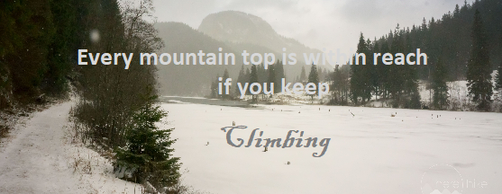

The mountains themselves call us into greater stories.
- Donald Miller

Without great mountains, we cannot reach great heights.
Richard Paul Evans

Low temperatures in winter make the hiking tours uncomfortable. There are injuries and illnesses that may come along with a cold weather.
This is the reason why you have to wear proper cold-weather clothing, stay hydrated and eat, take some cold-related kit in your pack.
